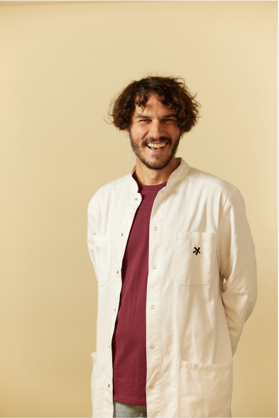
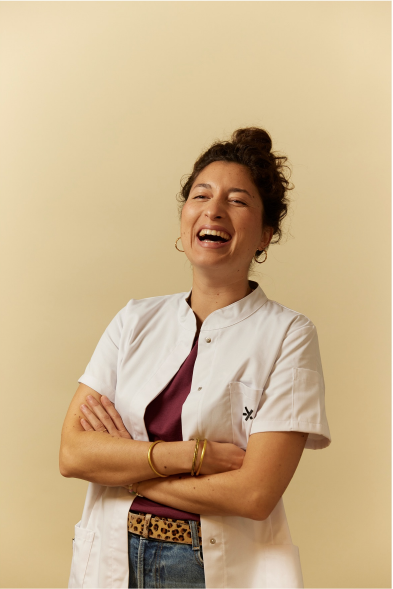

Dr Servane LACOSTE
Dr Servane LACOSTE Dr Pierre-Henri GORIOUX
Dr Pierre-Henri GORIOUX Dr Arnaud DE MILLERET
Dr Arnaud DE MILLERET Dr Romane VIDCOQ
Dr Romane VIDCOQ
Dr Adrien TAFFORET
Dr They KONGDr Servane LACOSTEDr Pierre-Henri GORIOUXDr Arnaud DE MILLERETDr Romane VIDCOQ
Dr Adrien TAFFORET
Dr They KONG